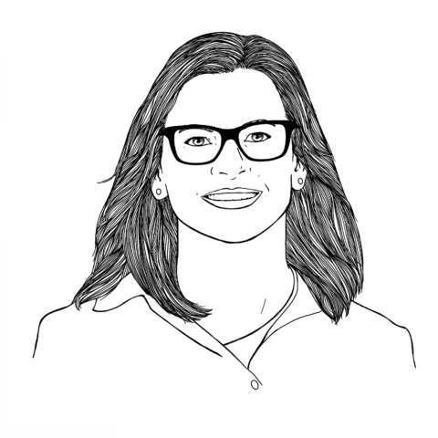
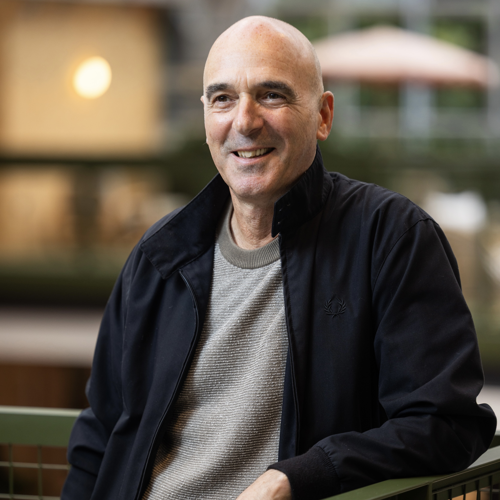

David Levine
Principal
Technology sector serial entrepreneur; founder and former CEO of DigitalBridge, and Principal of Manchester Angels.
15 September 2026 · 7.00pm
Location: placeholder
Manchester and Cambridge Angels bring together exited founders, operators and investors supporting ambitious technology businesses.
Technology sector serial entrepreneur; founder and former CEO of DigitalBridge, and Principal of Manchester Angels.

Technology entrepreneur, investor and coach helping local technology companies become successful. Chair of Manchester Angels.

Vice President at GP Bullhound, with experience executing M&A and fundraising transactions valued at over £1bn.

Co-founder and Managing Partner of GP Bullhound, passionate about technology innovation and entrepreneurs.

Experienced executive and investor who has founded and developed ventures across consultancy, built environment, technology and digital media.

Chief Executive Officer of the University of Manchester Innovation Factory. Catherine builds partnerships and programmes that commercialise research and create impact.

Technical founder, board advisor and non-executive director with deep experience across national security, intelligence and high-growth technology.

Portfolio Chair and NED with global experience across digital, AI, science and energy, guiding companies through complex transactions and growth.

Dr Richard Price is the co-founder and CTO of Pragmatic Semiconductor, developing ultra-thin, flexible integrated circuits designed to bring low-cost intelligence to everyday products. He has more than 25 years experience developing novel materials and manufacturing processes, and is an inventor on more than 30 patent families.
Manchester Angels member and active angel investor.

David Cleevely, CBE, FREng, FIET is a British entrepreneur and international telecoms expert who has built and advised many companies, principally in Cambridge. He founded Analysys, helped create Abcam, Cambridge Network and Cambridge Angels, and has long championed the economic development of Cambridge.

Simon is a qualified Chartered Accountant with a 25-year City career and 12 years of angel investing experience. His portfolio spans 36 companies with nine exits. A former Chair of Cambridge Angels and UKBAA Angel Investor of the Year, he mentors founders and champions the digital economy and women in business.

Technical and strategic COO now focusing on angel investing and NED roles. Jim brings substantial board-level experience in public and private companies, particularly on high-growth journeys from start-up through to IPO and international operations, across technology and life science sectors.

Nick built and exited CRFS, growing it into a defence technology company sold to private equity and then Motorola Solutions. Previously COO at Xennia, he helped propel the industrial inkjet company to market leadership. Nick is an active angel investor and mentor, with degrees from Oxford and Yale.

Pam is a management consultant working in healthcare systems and digital health internationally, and an angel investor in early-stage health tech. A former Chair of Cambridge Angels and Fellow of Cambridge Judge, she co-chairs The Cambridge Health Network and advises accelerators, VCs and start-ups.

Paul supports early-stage businesses and scale-ups through mentoring and board roles. He co-founded Inca Digital Printers, which became a global leader in large-format flatbed printing before a successful trade sale. He has invested in over 30 technology and healthcare start-ups.

Poppy Gustafsson is a British tech executive and life peer who served as UK Minister for Investment. She co-founded and led cybersecurity firm Darktrace, which uses self-learning AI to combat cyber threats. A mathematician and chartered accountant, her career includes Amadeus Capital and HP Autonomy.

Emmi has worked in finance, consulting and telecoms across two continents, including as COO of a tech start-up. As CEO of Cambridge Angels, she supports the group’s reach to attract high-quality opportunities and connect entrepreneurs with smart capital.